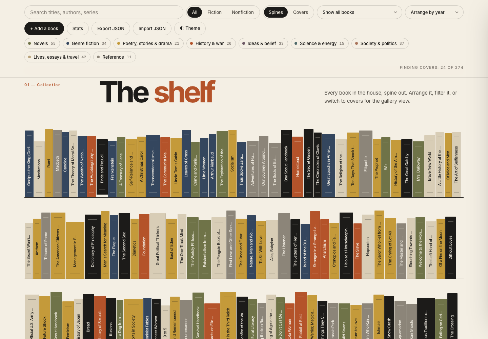
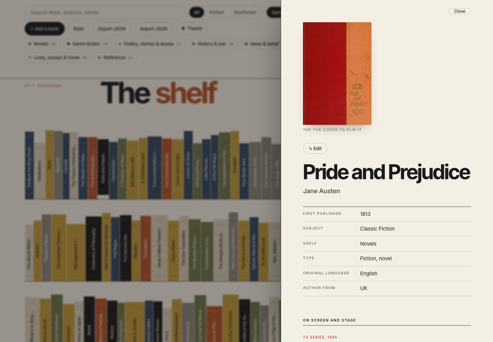
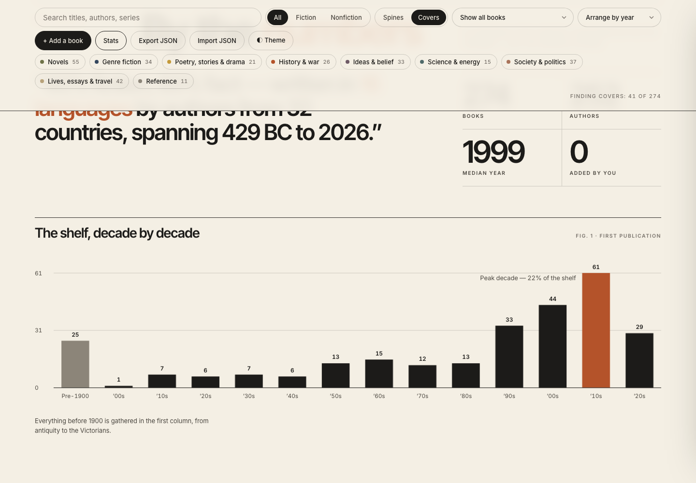

Browsing, rather than keeping inventory
I wanted a way to rediscover the books I already own. A shelf holds more than titles: adaptations, connections between writers, and the history around each book. The project started as a single-file page and grew into a more considered editorial experience.
My role and the AI collaboration
I set the brief, chose visual references, and worked through the design and front-end build with Grok Bot as a hands-on AI collaborator. I directed the typography, palette, layout, motion, and feature choices, reviewing each iteration and deciding what to keep.
Finding the visual direction
I explored gradients, a hand-drawn bookshop, and a 3D shelf before settling on a quieter magazine layout. Mid-century paperback design informed the palette; Inter Tight and Inter gave the titles, labels, and charts a consistent voice.
The final system uses paper and ink tones with muted accents. Colour groups the shelves by subject, while numbered sections and a large masthead give the catalogue an editorial rhythm.


Pull a book from the shelf
Books can be searched by title, author, or series, filtered by subject, and arranged by year, author, or title. Opening a book reveals its publication details, adaptations, connections to other books, and controversies. The decade chart also works as a filter.


See the shape of the collection
The “By the numbers” spread uses SVG charts calculated from the catalogue: decades, subjects, authors, languages, fiction and nonfiction, and connections beyond the page. The charts update when the collection changes.


Keep it simple to maintain
A small Python build script assembles a static page hosted on Vercel. Open Library supplies covers, and Wikipedia supplies author portraits and descriptions. Results are cached in the browser; typographic covers fill in when a match is unavailable.
Additions and edits are stored in localStorage, with JSON export and import for backup and transfer. They currently belong to that browser rather than syncing across devices. Some automatically matched covers represent a different edition, so pinning an edition and adding cross-device sync are useful next steps.
The site also includes an evening theme, keyboard focus states, and reduced-motion support. It is a small personal tool, with room to keep improving as the collection changes.